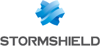

Mes Certifications IT

Stormshield CSNA
Administration et configuration des pare-feux de nouvelle génération (UTM). Maîtrise du filtrage, du NAT et des VPN.
Cybersécurité
En préparation
Cisco CCNA (200-301)
Maîtrise des fondamentaux du réseau : routage (OSPF), commutation (VLAN, STP), adressage IP (IPv4/IPv6) et sécurité de base.
Routage & Switching
En préparation